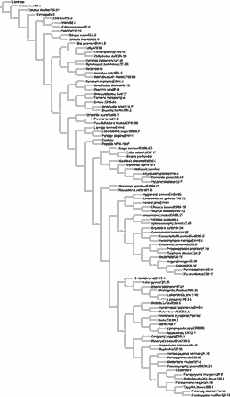

We have almost no understanding about the patterns of relationships within the most diverse group of butterflies belonging to Nymphalidae, the subfamily Satyrinae (about 2400 species of worldwide distribution). The goal of this project is to elucidate patterns of relationships of the major groups (tribes and subtribes) and provide evidence on the relationships amongst these lineages by using a cladistic analysis based on molecular data. This project is being developed under the supervision of Niklas Wahlberg.
To accomplish our goal of studying the evolution of hostplant use in this butterfly subfamily, we need to have a robust phylogenetic hypothesis for our study group. During the first stage of this project we discovered that most of the traditional classification needs to be revised, because it is reflecting unnatural groups at the tribal and subtribal level. Moreover, we found out that Satyrinae, as it is known now, might not be a monophyletic subfamily. In order to test Satyrinae's monophyly, we are working on a phylogeny for Satyrinae and related subfamilies, like Calinaginae, Charaxinae and Morphinae.